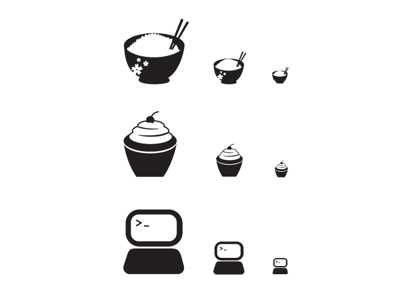

October 2, 2019
Project 2: Scalable Icons


For this scalable icon project, we had to create three icons that represent different aspects of ourselves. These icons must be designed to fit together with similiar aestheics and be scalable in three sizes: 128px, 64px, and 32px.
September 4, 2019
Project 1: Isometric Avatar

Isometric drawing is a style to create 3D drawings using equal 30 degree angles. For this project, we used Adobe Illustrator to create an isometric vector of ourselves. I am holding a phone because I enjoy reading webcomics as a break from all the schoolwork I have to do.